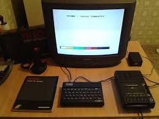
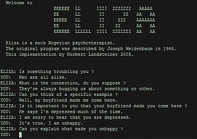

Making sense of technology: a personal journey.
When I was a kid I remember going to the beach with my cousin's family.
One day his father, took us to watch a large ship that have
been grounded there for a long time. That night I couldn't sleep.
I could not stop thinking that, perhaps, I could somehow be able to salvage
pieces of that ship and build a robot and magically make it alive...
Then there was the 80's and the videogames. I was just fascinated by them from the first time I saw a telegame. Then, in the 90s, I became an arcade rat, spending every cent I had... Finally I was given a video game and would not stop playing that...
For me those game characters were alive. They were living somewhere, in some different dimension, and I liked to mimic that magic thing, imagining games that I would draw in my school notebooks.
Someday another kid asked me if I knew what a computer was. Obviously I didn't. He told me then that a computer was like a videogame, but, besides playing games you could tell it how to show your own games. That, right there... I was hooked to computers for life...
I got my hands on computer magazines and was just obssessed with the idea of having a computer. I asked my mother but then she wanted me to explain what was that thing that I wanted. I couldn't.
To convince my mother I have to find and buy a book about computers and torture her all the time with explanations about what was software, hardware, and so on. I would also lecture her about the history of computers. It didn't took to long to break her... :)

When we brough the "computer" home my parents came to watch me unbox it, waiting to see me create all the marvels I was telling then was possible with that incredible machine. But that didn't happened... After I figured out how to wire the whole thing to the television I realized just how different it was from a videogame... No joystick to play... Just a strange rubber keyboard. And the computer wouldn't show anything animated, just some text and a blinking block. I failed to impress them...
Ok, that's enough computer for the nigth. Now let's disconnect this thing from the television so we can whatch it.
While people whatched television I read the computer documentation. Program... Programming language... BASIC... Time to bed was a torture, I couldn't touch the computer, I couldn't sleep...
Next morning I waited my parents leave the house and set the thing up again. I manage to copy a program that would play some notes in a loop... Incredible!
Then it happened. I found a keyword for creating random numbers and substituted the loop counter by it as parameter for the note. When I ran the program it played a sequence of random notes... I had created my first program... I was so happy!
Marked by my previous experiences I managed to enter the Computer Science course at the university. At that time I had cristalized the idea that the magic of creating life in the computer was called Artificial Intelligence, and all the other stuff just seemed boring. The Whole body of knowledge of computer science seemed to me like a pre-sequel for the main show that was AI. I learned PROLOG and figured ( as the Japanese had done a decade ago ) that all other programming was a waste of time...
With that "mindset" I managed to enter an AI research group. To my disapointment though, the professor that was the head of the group didn't believed in AI as I did. I remembered him saying that we didn't knew what intelligence was, or that a computer couldn't do the proccessing done by an amoeba.
Intrigued by his comments I read Searle's book The Rediscovery of the Mind and it was shocking. I was just starting to learn about the cycles of boom and bust of Artificial Intelligence...
But, I tought, if intelligence (the liveness, the magic I was looking for) can not be created by just declaring logic rules in a computer program, how can it be done? I was sure it could, since we are intelligent and we are not imaterial beings, intelligence could be created in some other medium. Of course I was just in accordance with the prevalent thinking of the time (even more widespread today), without knowing its basis, like the Church-Turing thesis .
Studying artificial neural networks I came to believe that,
if we can show intelligence, perhaps it could
be recreated by mimicking or physical endowment. And what was inside our brains was
a network of neurons. When I started to experiment with it it striked my, however, how limited it was!
You couldn't train a neural network to make a meaningfull conversation. A chatbot, like
Eliza
that anyone could try on Emacs also couldn't have a

Then I learnt about
Multi-agent systems
and believed that, perhaps, a
With that new hope in distributed AI, towards my graduation I had the opportunity to apply the subsumption architecture to structure several aspects of the behavior of the characters in a videogame whose development I participated, along with some friends (Yeah!).
Then I entered the "industry", working on embedded systems (telecomunications, then printers) and wondered how such equipment could exibit adaptive behavior. So I made an attempt to created a programming language that would control the fitness function directing the evolution of a population of neural networks, I called it "Rita", which is the name of my wife. The code still lives here .
As the Web became more and more pervasive and our daily activities started to be mediated by computer programs, not just for people like me, working in the IT industry, but everywhere. I started to feel (also read this book ) there was no meaning in trying to build an intelligence that is "external". We have become the characters in the videogame, we have been assimilated, as in the Star Trek movie, and became Cyborgs, as Donna Haraway and Andy Clark would show. Also, we were the distributed agents in the web. I started to contemplate intelligence as something different I've seen it before, as the emergent property of the integration of even more sofisticated systems, people, technology, culture. Seing myself inside the videogame. In this sense, the interface has become something very important to me.
In this context, I feel like I went full circle. Starting with the amazement with simple programs to seeing myself as the sytem to be developed, within interaction with ever more sofisticated programs and people. I've migrated from hacking software to hacking myself.